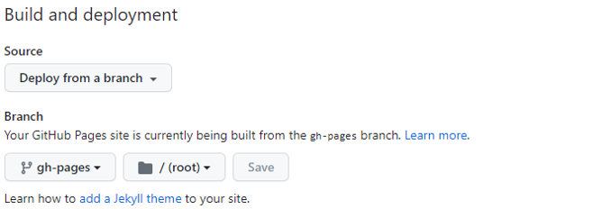

Note
Objective
github pages(web hosting) 및 github action(workflow 자동화)를 이용하여 md 파일로 작성된 book을 호스팅하는 방법
github pages#
github pages는 웹 사이트 hosting 제공 서비스github action은 workflow 자동화위 2가지를 이용해 github에 등록된 정적 컨텐츠(html, image 등)를 쉽게 호스팅 할 수 있음. (site url –> https://{github_id}.github.io)/directory
web hosting process#
book컨텐츠(.md 파일)를 작성하고 웹 호스팅을 위해 html 파일로 전환(build 단계)를 수행한 후 생성한 html 파일을 github page(웹 서버)로 deploy(배포)하는 3단계 과정을 거쳐야 함.
create (.md 작성) -> build (html파일 생성) -> deploy (웹서버 배포)
일련의 과정을 자동화 해주기 위해
github action을 사용함.
github pages 설정#
github pages 생성 후 설정에서 source를 Deploy from a branch로 설정
click github repo > setting
click pages in left menu
Source: select
Deploy from a branchDeploy from a branch와github action2가지 옵션 존재Deploy from a branch는 build는 사용자 정의하고 deploy 배포만 자동 실행이 방식으로 설정 시 workflow에
pages build and deploymentworkflow 파일 자동 생성됨
github action은 build와 deploy를 모두 사용자가 정의하고 사용하는 방식
Branch: select
gh-pages,rootClick
savebutton
build#
github pages build를 위해 아래 3가지 방법 중 2, 3번 설명
_build/html폴더 내 html 컨텐츠를 수동으로gh-pagesbranch로 이동 복사ghp-import 모듈활용하는 방법 (반자동: 여기서 설명)Github Action활용하는 방법 (자동: 다음에 설명)
build 반자동 (ghp-import)#
ghp-import 모듈을 이용하여 build 후 gh-pages branch로 자동 배포
모듈 설치:
pdm add ghp-import모듈 실행:
pdm run ghp-import -n -p -f docs/_build/html옵션
-n: Include a .nojekyll file in the branch.
-p: Push the branch to origin/{branch} after committing.
-f: Force the push to the repository.
실행결과
Enumerating objects: 389, done. Counting objects: 100% (389/389), done. Delta compression using up to 8 threads Compressing objects: 100% (204/204), done. Writing objects: 100% (389/389), 5.06 MiB | 2.76 MiB/s, done. Total 389 (delta 135), reused 386 (delta 133), pack-reused 0 remote: Resolving deltas: 100% (135/135), done. remote: remote: Create a pull request for 'gh-pages' on GitHub by visiting: remote: https://github.com/yoblee/tdc/pull/new/gh-pages remote: To https://github.com/yoblee/tdc.git * [new branch] gh-pages -> gh-pages
build 자동화 - github action#
github > Actions 선택
New workflow선택 후 아래 내용 작성 후 commit (publish.yml)on: # Runs on pushes targeting the default branch push: branches: ["main"] # Allows you to run this workflow manually from the Actions tab workflow_dispatch: # Sets permissions of the GITHUB_TOKEN to allow deployment to GitHub Pages permissions: **contents: write** pages: write id-token: write jobs: deploy-book: runs-on: ubuntu-latest steps: - uses: actions/checkout@v2 # Install dependencies - name: Set up Python 3.10.12 uses: actions/setup-python@v1 with: python-version: 3.10.12 - name: Install pdm run: | pip install pdm - name: Install dependencies run: | pdm install # Build the book - name: Build the book run: | pdm run jupyter-book build ./docs/ # Push the book's HTML to github-pages - name: GitHub Pages action uses: peaceiris/actions-gh-pages@v3.5.9 with: github_token: ${{ secrets.GITHUB_TOKEN }} publish_dir: ./docs/_build/html
github page 접속#
https://{github id}.github.io/{book name}